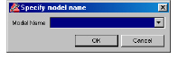
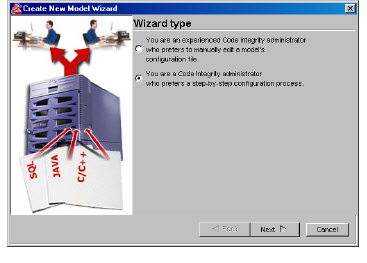
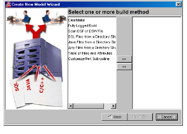
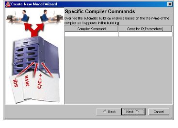
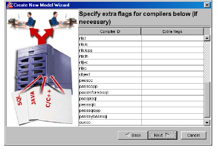
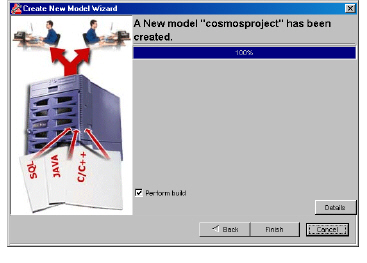

To create an information model in the create model wizard
1 Do one of the following:
• Select File > New Model.
• Click .
The Specify model name dialog box appears.

2 In the Model Name field, type the name of the information model or select a model from the list.
Important: Do not use special characters, such as underscores or hash marks (#). Model names should only contain alphabetic characters and numbers.
3 Click OK.
The Create New Model Wizard appears.

4 Select the following option:
You are a DIScover administrator who prefers a step-by-step configuration process.
5 Click Next.
The Select one or more build method panel appears.

6 A simple model is based on a build log, a DSP file, or a directory of source code; however, a model can also use more than one build log. For each component in your software project, select the corresponding build method once and click >>. If several components in your software project use the same build method, select that build method for each component and click >>. The available options are:
• ClearMake creates a model using all derived objects in a specified Rational ClearCase view.
• Fully Logged Build creates a model using all compilations logged during a custom build.
• Scan DSP or DSW File creates a model using a Microsoft Visual C++ DSP or DSW project file.
• SQL Files from a Directory Structure creates a model using SQL source files in a specified directory.
• Java Files from a Directory Structure creates a model using Java source files in a specified directory.
• Any Files from a Directory Structure creates a model using specific types of source files in a specified directory.
• Table of Files and Attributes creates a model using a set of files listed in a table that supplies specific attributes for each file. The table is a text file with one line per compile file. Each line has the following tab-separated fields:
• project name (e.g. ROOT)
• compiler’s working directory
• name of the compiled file
• compiler id (e.g. ntclcpp, suncc, javac)
• compiler flags (on the compiler command line)
• Customize Perl Subroutine invokes a customized GetBuildLog.pl.
Important: This option is recommended for experienced DIScover administrators who have experience editing scripts.
For more information on customizing GetBuildLog.pl, see Customizing GetBuildLog.pl.
7 Click Next.
The parameters panel that appears depends on which build type(s) you selected.
Note: Parameters in bold must be filled out, and spaces must be used to specify multiple file extensions.
8 If you selected ClearMake, specify the following:
• pattern
A pattern specifies which Rational ClearCase derived objects to include in the model. The pattern follows "regular expression" rules. On Windows, the most important rules are:
• A letter, numeral, or forward slash (/) matches itself.
• A period (.) matches any single character.
• A backslash (\) followed by a special character matches the special character.
• Parentheses can be used for grouping.
Note: On Windows, you must specify the view's path in the pattern.
• view
If you selected Fully Logged Build, specify the following:
• log file
• working directory
If you selected Scan DSP or DSW File, specify the DSP or DSW project file.
If you selected SQL Files from a Directory Structure, specify the following:
• directory containing source files
• compiler options
• file extensions (default extensions are displayed)
• working directory
If you selected Java Files from a Directory Structure, specify the following:
• directory containing source files
• classpath
If your classpath contains spaces, enclose it with quotes, for example, VAR=CLASSPATH:”/src/xerces Java Parser/xerces.jar”:$CLASSPATH.
Note: DIScover usually locates your Java compiler and the rt.jar; however, if you receive error messages that relate to Java runtime classes during the model build process, an inadequate rt.jar may have been used. If this occurs, specify the rt.jar that you want to use with your classpath.
• compiler options
• file extensions (default extensions appear)
• working directory
If you selected Any Files from a Directory Structure, specify the following:
• directory containing source files
• compiler
• compiler options
• file extensions (default extensions appear)
• working directory
If you selected Table of Files and Attributes, specify the build table.
If you selected Customized Perl Subroutine, see Customizing GetBuildLog.pl.
9 Click Next.
The Different machine panel appears.
10 Do one of the following:
• If you are building this model on the same machine that is used to compile your software project, click Yes and proceed to step 13.
• If you are building this model on a different machine than the one used to compile your software project, click No and proceed to step 11.
11 Click Next.
The Path translation panel appears.
12 If your software project is built on a different machine from where your model is built, the file names in the build log will not correspond to the locations of the files on the model build machine.
Note: Make sure the current compiler is installed or all necessary system header files are visible from the machine.
Do the following:
• In the From field, type the path as it appears in your build log.
• In the To field, type the path to the source files.
13 Click Next.
The Compile Extensions panel appears, with the default file extensions displayed.
14 If necessary, type the file extensions included in your software project.
15 Click Next.
The Versions and servers panel appears.
DIScover simplifies the maintenance of model versions and the serving of models on your network with a process called windowing.
Windowing allows you to maintain a set number of separate versions of the same model for historical purposes, and to serve a set number of those models to your users. Windowing uses the date stamps incorporated into each model; for this process, we recommend building your model with TODAY as the version name.
Once you set your variables, a version window script, VersionWindow.pl, performs routine cleanup and maintenance for you by checking the number of existing models against the values specified in the file.
16 In the Host Name field, specify the name of the machine hosting the model you are creating.
17 In the next field, specify how many model versions you want to maintain in your repository.
Note: If you intend to keep multiple models, the number of models made available to your users should always be one less than the number of models that you keep
18 In the next field, specify how many model versions you want to make available to DIScover users.
19 Click Next.
The Parallel parse panel appears.
This option specifies the number of processes to run in parallel during the update pass of the model build.
On a typical machine (one processor), we recommend specifying between 1 and 4. If you specify more than 4 on a typical machine, your machine may become unresponsive. By default, 4 appears.
20 If necessary, type the number that suits your needs.
21 Click Next.
The Specific Compiler Commands panel appears.

This option overrides the built-in identification of compilers to match the command verbatim. If the build log contains various compiler commands, then multiple COMPILER lines can handle them. For a list of valid compiler IDs, see Changing Your Compiler Code.
22 If necessary, do the following:
• In the Compiler Command field, type a compiler command.
• In the Compiler ID (parameters) field, type a compiler ID.
23 Click Next.
A compiler flag panel appears.

If there are two few flags, parsing can fail, such as a missing include
-I directive. This option adds the specified flags to all invocations of the specified parser. If no compiler ID is specified, extra flags on the any line are added to all parser command lines.
24 If necessary, specify extra flags for your compilers in the fields provided. For a list of acceptable flags, see the DIScover Installation and Administration Guide.
25 Click Next.
The Test Method panel appears.
The Test Method panel specifies how to check for outdated files when performing an incremental model build.
26 Choose an option:
• Timestamp is fast and reliable. We recommend this option for most information models.
• Checksum is very reliable, but may take a long time.
• Timestamp and Checksum compares the timestamps of the file versions. If they are different, DIScover then calculates and compares the file checksums.
27 Click Next.
The Force publish panel appears.
28 Do one of the following:
• To create a new model version, even if it is identical to the baseline model, click Yes.
• To cancel creating a new model version, if it is identical to the baseline model, click No.
29 Click Next.
A panel appears, displaying the model creation status.

To display details about the model creation, click Details.
30 Do one of the following:
• To finish the model creation process, click Finish.
The new information model appears in the Navigator pane.
• To build the new information model, enable Perform build, click Finish, and proceed to step 2 of Starting a Full Model Build.